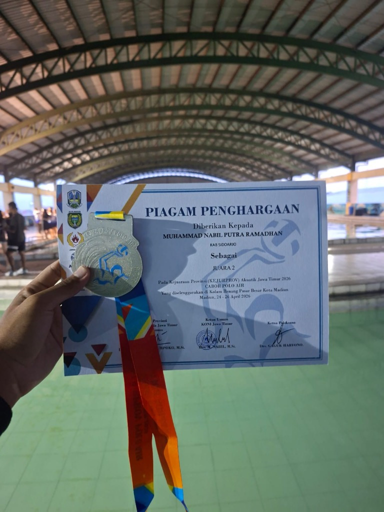
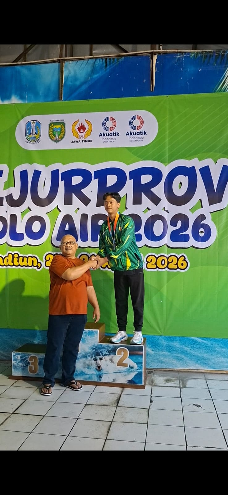
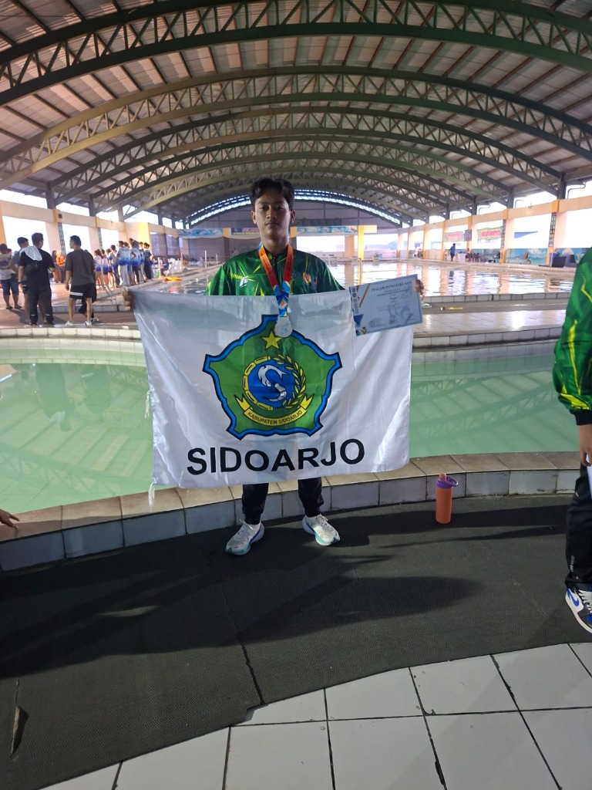

Kejurprov Jawa Timur 2026
Berhasil meraih Juara 2 pada Kejuaraan Provinsi Akuatik Jawa Timur 2026 cabang Polo Air yang diselenggarakan di Kolam Renang Pasar Besar, Kota Madiun.
Juara 2 / Medali PerakPolo AirKota Madiun2026
Pencapaian medali perak pada Kejuaraan Provinsi (KEJURPROV) Akuatik Jawa Timur 2026 cabang Polo Air.
Berhasil meraih Juara 2 pada Kejuaraan Provinsi Akuatik Jawa Timur 2026 cabang Polo Air yang diselenggarakan di Kolam Renang Pasar Besar, Kota Madiun.


